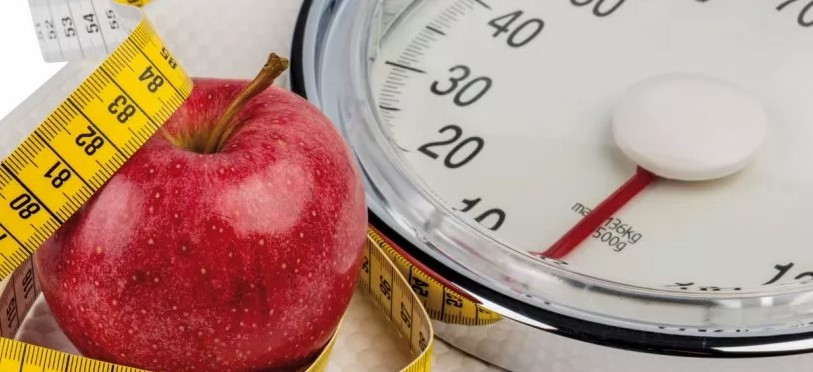

¿Qué es el índice de masa corporal?
El índice de masa corporal (IMC) es una medida que se utiliza para determinar si una persona tiene un peso saludable en función de su altura. El IMC se calcula dividiendo el peso de una persona en kilogramos por el cuadrado de su altura en metros. Un IMC saludable está entre 18,5 y 24,9.
¿Cómo se calcula el índice de masa corporal?
Para calcular el IMC, simplemente divide tu peso en kilogramos por el cuadrado de tu altura en metros. La fórmula es:
IMC = peso (kg) / altura² (m²)
Por ejemplo, si pesas 70 kilos y mides 1,75 metros de altura, tu IMC sería:
IMC = 70 / (1,75 x 1,75) = 22,9
Interpretación del índice de masa corporal
El IMC se utiliza como una guía general para determinar si alguien tiene un peso saludable en función de su altura. Sin embargo, hay algunas limitaciones en su uso. Por ejemplo, el IMC no tiene en cuenta la cantidad de masa muscular de una persona. Alguien que tiene mucha masa muscular puede tener un IMC alto, pero no necesariamente tener sobrepeso
